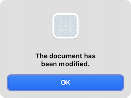
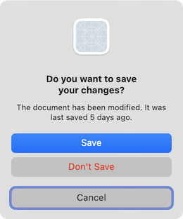
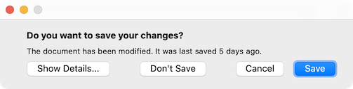
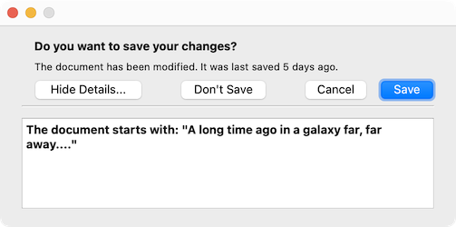

QMessageBox Class
The QMessageBox class provides a modal dialog for informing the user or for asking the user a question and receiving an answer. More...
| Header: | #include <QMessageBox> |
| CMake: | find_package(Qt6 REQUIRED COMPONENTS Widgets) target_link_libraries(mytarget PRIVATE Qt6::Widgets) |
| qmake: | QT += widgets |
| Inherits: | QDialog |
- List of all members, including inherited members
- Deprecated members
- QMessageBox is part of Standard Dialogs.
Public Types
| enum | ButtonRole { InvalidRole, AcceptRole, RejectRole, DestructiveRole, ActionRole, …, ResetRole } |
| enum | Icon { NoIcon, Question, Information, Warning, Critical } |
(since 6.6) enum class | Option { DontUseNativeDialog } |
| flags | Options |
| enum | StandardButton { Ok, Open, Save, Cancel, Close, …, ButtonMask } |
| flags | StandardButtons |
Properties
|
|
Public Functions
| QMessageBox(QWidget *parent = nullptr) | |
| QMessageBox(QMessageBox::Icon icon, const QString &title, const QString &text, QMessageBox::StandardButtons buttons = NoButton, QWidget *parent = nullptr, Qt::WindowFlags f = Qt::Dialog | Qt::MSWindowsFixedSizeDialogHint) | |
| virtual | ~QMessageBox() |
| void | addButton(QAbstractButton *button, QMessageBox::ButtonRole role) |
| QPushButton * | addButton(const QString &text, QMessageBox::ButtonRole role) |
| QPushButton * | addButton(QMessageBox::StandardButton button) |
| QAbstractButton * | button(QMessageBox::StandardButton which) const |
| QMessageBox::ButtonRole | buttonRole(QAbstractButton *button) const |
| QList<QAbstractButton *> | buttons() const |
| QCheckBox * | checkBox() const |
| QAbstractButton * | clickedButton() const |
| QPushButton * | defaultButton() const |
| QString | detailedText() const |
| QAbstractButton * | escapeButton() const |
| QMessageBox::Icon | icon() const |
| QPixmap | iconPixmap() const |
| QString | informativeText() const |
| void | open(QObject *receiver, const char *member) |
| QMessageBox::Options | options() const |
| void | removeButton(QAbstractButton *button) |
| void | setCheckBox(QCheckBox *cb) |
| void | setDefaultButton(QPushButton *button) |
| void | setDefaultButton(QMessageBox::StandardButton button) |
| void | setDetailedText(const QString &text) |
| void | setEscapeButton(QAbstractButton *button) |
| void | setEscapeButton(QMessageBox::StandardButton button) |
| void | setIcon(QMessageBox::Icon) |
| void | setIconPixmap(const QPixmap &pixmap) |
| void | setInformativeText(const QString &text) |
(since 6.6) void | setOption(QMessageBox::Option option, bool on = true) |
| void | setOptions(QMessageBox::Options options) |
| void | setStandardButtons(QMessageBox::StandardButtons buttons) |
| void | setText(const QString &text) |
| void | setTextFormat(Qt::TextFormat format) |
| void | setTextInteractionFlags(Qt::TextInteractionFlags flags) |
| void | setWindowModality(Qt::WindowModality windowModality) |
| void | setWindowTitle(const QString &title) |
| QMessageBox::StandardButton | standardButton(QAbstractButton *button) const |
| QMessageBox::StandardButtons | standardButtons() const |
(since 6.6) bool | testOption(QMessageBox::Option option) const |
| QString | text() const |
| Qt::TextFormat | textFormat() const |
| Qt::TextInteractionFlags | textInteractionFlags() const |
Public Slots
| virtual int | exec() override |
Signals
| void | buttonClicked(QAbstractButton *button) |
Static Public Members
| void | about(QWidget *parent, const QString &title, const QString &text) |
| void | aboutQt(QWidget *parent, const QString &title = QString()) |
| QMessageBox::StandardButton | critical(QWidget *parent, const QString &title, const QString &text, QMessageBox::StandardButtons buttons = Ok, QMessageBox::StandardButton defaultButton = NoButton) |
| QMessageBox::StandardButton | information(QWidget *parent, const QString &title, const QString &text, QMessageBox::StandardButtons buttons = Ok, QMessageBox::StandardButton defaultButton = NoButton) |
| QMessageBox::StandardButton | question(QWidget *parent, const QString &title, const QString &text, QMessageBox::StandardButtons buttons = StandardButtons(Yes | No), QMessageBox::StandardButton defaultButton = NoButton) |
| QMessageBox::StandardButton | warning(QWidget *parent, const QString &title, const QString &text, QMessageBox::StandardButtons buttons = Ok, QMessageBox::StandardButton defaultButton = NoButton) |
Reimplemented Protected Functions
| virtual void | changeEvent(QEvent *ev) override |
| virtual void | closeEvent(QCloseEvent *e) override |
| virtual bool | event(QEvent *e) override |
| virtual void | keyPressEvent(QKeyEvent *e) override |
| virtual void | resizeEvent(QResizeEvent *event) override |
| virtual void | showEvent(QShowEvent *e) override |
Macros
| QT_REQUIRE_VERSION(int argc, char **argv, const char *version) |
Detailed Description
A message box displays a primary text to alert the user to a situation, an informative text to further explain the situation, and an optional detailed text to provide even more data if the user requests it.
A message box can also display an icon and standard buttons for accepting a user response.
Two APIs for using QMessageBox are provided, the property-based API, and the static functions. Calling one of the static functions is the simpler approach, but it is less flexible than using the property-based API, and the result is less informative. Using the property-based API is recommended.
The Property-based API
To use the property-based API, construct an instance of QMessageBox, set the desired properties, and call exec() to show the message. The simplest configuration is to set only the message text property.
QMessageBox msgBox; msgBox.setText("The document has been modified."); msgBox.exec();
The user must click the OK button to dismiss the message box. The rest of the GUI is blocked until the message box is dismissed.

A better approach than just alerting the user to an event is to also ask the user what to do about it.
Set the standard buttons property to the set of buttons you want as the set of user responses. The buttons are specified by combining values from StandardButtons using the bitwise OR operator. The display order for the buttons is platform-dependent. For example, on Windows, Save is displayed to the left of Cancel, whereas on macOS, the order is reversed. Mark one of your standard buttons to be your default button.
The informative text property can be used to add additional context to help the user choose the appropriate action.
QMessageBox msgBox; msgBox.setText("The document has been modified."); msgBox.setInformativeText("Do you want to save your changes?"); msgBox.setStandardButtons(QMessageBox::Save | QMessageBox::Discard | QMessageBox::Cancel); msgBox.setDefaultButton(QMessageBox::Save); int ret = msgBox.exec();

The exec() slot returns the StandardButtons value of the button that was clicked.
switch (ret) { case QMessageBox::Save: // Save was clicked break; case QMessageBox::Discard: // Don't Save was clicked break; case QMessageBox::Cancel: // Cancel was clicked break; default: // should never be reached break; }
To give the user more information to help them choose the appropriate, action, set the detailed text property. Depending on the platform the detailed text, may require the user to click a Show Details... button to be shown.

Clicking the Show Details... button displays the detailed text.

Rich Text and the Text Format Property
The detailed text property is always interpreted as plain text. The main text and informative text properties can be either plain text or rich text. These strings are interpreted according to the setting of the text format property. The default setting is auto-text.
Note that for some plain text strings containing XML meta-characters, the auto-text rich text detection test may fail causing your plain text string to be interpreted incorrectly as rich text. In these rare cases, use Qt::convertFromPlainText() to convert your plain text string to a visually equivalent rich text string, or set the text format property explicitly with setTextFormat().
Severity Levels and the Icon and Pixmap Properties
QMessageBox supports four predefined message severity levels, or message types, which really only differ in the predefined icon they each show. Specify one of the four predefined message types by setting the icon property to one of the predefined icons. The following rules are guidelines:
| Question | For asking a question during normal operations. |
| Information | For reporting information about normal operations. |
| Warning | For reporting non-critical errors. |
| Critical | For reporting critical errors. |


Predefined icons are not defined by QMessageBox, but provided by the style. The default value is No Icon. The message boxes are otherwise the same for all cases. When using a standard icon, use the one recommended in the table, or use the one recommended by the style guidelines for your platform. If none of the standard icons is right for your message box, you can use a custom icon by setting the icon pixmap property instead of setting the icon property.
In summary, to set an icon, use either setIcon() for one of the standard icons, or setIconPixmap() for a custom icon.
The Static Functions API
Building message boxes with the static functions API, although convenient, is less flexible than using the property-based API, because the static function signatures lack parameters for setting the informative text and detailed text properties. One work-around for this has been to use the title parameter as the message box main text and the text parameter as the message box informative text. Because this has the obvious drawback of making a less readable message box, platform guidelines do not recommend it. The Microsoft Windows User Interface Guidelines recommend using the application name as the window's title, which means that if you have an informative text in addition to your main text, you must concatenate it to the text parameter.
Note that the static function signatures have changed with respect to their button parameters, which are now used to set the standard buttons and the default button.
Static functions are available for creating information(), question(), warning(), and critical() message boxes.
int ret = QMessageBox::warning(this, tr("My Application"), tr("The document has been modified.\n" "Do you want to save your changes?"), QMessageBox::Save | QMessageBox::Discard | QMessageBox::Cancel, QMessageBox::Save);
The Standard Dialogs example shows how to use QMessageBox and the other built-in Qt dialogs.
Advanced Usage
If the standard buttons are not flexible enough for your message box, you can use the addButton() overload that takes a text and a ButtonRole to add custom buttons. The ButtonRole is used by QMessageBox to determine the ordering of the buttons on screen (which varies according to the platform). You can test the value of clickedButton() after calling exec(). For example,
QMessageBox msgBox; QPushButton *connectButton = msgBox.addButton(tr("Connect"), QMessageBox::ActionRole); QPushButton *abortButton = msgBox.addButton(QMessageBox::Abort); msgBox.exec(); if (msgBox.clickedButton() == connectButton) { // connect } else if (msgBox.clickedButton() == abortButton) { // abort }
Default and Escape Keys
The default button (i.e., the button activated when Enter is pressed) can be specified using setDefaultButton(). If a default button is not specified, QMessageBox tries to find one based on the button roles of the buttons used in the message box.
The escape button (the button activated when Esc is pressed) can be specified using setEscapeButton(). If an escape button is not specified, QMessageBox tries to find one using these rules:
- If there is only one button, it is the button activated when Esc is pressed.
- If there is a Cancel button, it is the button activated when Esc is pressed.
- If there is exactly one button having either the Reject role or the the No role, it is the button activated when Esc is pressed.
When an escape button can't be determined using these rules, pressing Esc has no effect.
See also QDialogButtonBox and Standard Dialogs Example.
Member Type Documentation
enum QMessageBox::ButtonRole
This enum describes the roles that can be used to describe buttons in the button box. Combinations of these roles are as flags used to describe different aspects of their behavior.
| Constant | Value | Description |
|---|---|---|
QMessageBox::InvalidRole | -1 | The button is invalid. |
QMessageBox::AcceptRole | 0 | Clicking the button causes the dialog to be accepted (e.g. OK). |
QMessageBox::RejectRole | 1 | Clicking the button causes the dialog to be rejected (e.g. Cancel). |
QMessageBox::DestructiveRole | 2 | Clicking the button causes a destructive change (e.g. for Discarding Changes) and closes the dialog. |
QMessageBox::ActionRole | 3 | Clicking the button causes changes to the elements within the dialog. |
QMessageBox::HelpRole | 4 | The button can be clicked to request help. |
QMessageBox::YesRole | 5 | The button is a "Yes"-like button. |
QMessageBox::NoRole | 6 | The button is a "No"-like button. |
QMessageBox::ApplyRole | 8 | The button applies current changes. |
QMessageBox::ResetRole | 7 | The button resets the dialog's fields to default values. |
See also StandardButton.
enum QMessageBox::Icon
This enum has the following values:
| Constant | Value | Description |
|---|---|---|
QMessageBox::NoIcon | 0 | the message box does not have any icon. |
QMessageBox::Question | 4 | an icon indicating that the message is asking a question. |
QMessageBox::Information | 1 | an icon indicating that the message is nothing out of the ordinary. |
QMessageBox::Warning | 2 | an icon indicating that the message is a warning, but can be dealt with. |
QMessageBox::Critical | 3 | an icon indicating that the message represents a critical problem. |
[since 6.6] enum class QMessageBox::Option
flags QMessageBox::Options
| Constant | Value | Description |
|---|---|---|
QMessageBox::Option::DontUseNativeDialog | 0x00000001 | Don't use the native message dialog. |
This enum was introduced in Qt 6.6.
The Options type is a typedef for QFlags<Option>. It stores an OR combination of Option values.
enum QMessageBox::StandardButton
flags QMessageBox::StandardButtons
These enums describe flags for standard buttons. Each button has a defined ButtonRole.
| Constant | Value | Description |
|---|---|---|
QMessageBox::Ok | 0x00000400 | An "OK" button defined with the AcceptRole. |
QMessageBox::Open | 0x00002000 | An "Open" button defined with the AcceptRole. |
QMessageBox::Save | 0x00000800 | A "Save" button defined with the AcceptRole. |
QMessageBox::Cancel | 0x00400000 | A "Cancel" button defined with the RejectRole. |
QMessageBox::Close | 0x00200000 | A "Close" button defined with the RejectRole. |
QMessageBox::Discard | 0x00800000 | A "Discard" or "Don't Save" button, depending on the platform, defined with the DestructiveRole. |
QMessageBox::Apply | 0x02000000 | An "Apply" button defined with the ApplyRole. |
QMessageBox::Reset | 0x04000000 | A "Reset" button defined with the ResetRole. |
QMessageBox::RestoreDefaults | 0x08000000 | A "Restore Defaults" button defined with the ResetRole. |
QMessageBox::Help | 0x01000000 | A "Help" button defined with the HelpRole. |
QMessageBox::SaveAll | 0x00001000 | A "Save All" button defined with the AcceptRole. |
QMessageBox::Yes | 0x00004000 | A "Yes" button defined with the YesRole. |
QMessageBox::YesToAll | 0x00008000 | A "Yes to All" button defined with the YesRole. |
QMessageBox::No | 0x00010000 | A "No" button defined with the NoRole. |
QMessageBox::NoToAll | 0x00020000 | A "No to All" button defined with the NoRole. |
QMessageBox::Abort | 0x00040000 | An "Abort" button defined with the RejectRole. |
QMessageBox::Retry | 0x00080000 | A "Retry" button defined with the AcceptRole. |
QMessageBox::Ignore | 0x00100000 | An "Ignore" button defined with the AcceptRole. |
QMessageBox::NoButton | 0x00000000 | An invalid button. |
The following values are obsolete:
| Constant | Value | Description |
|---|---|---|
QMessageBox::YesAll | YesToAll | Use YesToAll instead. |
QMessageBox::NoAll | NoToAll | Use NoToAll instead. |
QMessageBox::Default | 0x00000100 | Use the defaultButton argument of information(), warning(), etc. instead, or call setDefaultButton(). |
QMessageBox::Escape | 0x00000200 | Call setEscapeButton() instead. |
QMessageBox::FlagMask | 0x00000300 | |
QMessageBox::ButtonMask | ~FlagMask |
The StandardButtons type is a typedef for QFlags<StandardButton>. It stores an OR combination of StandardButton values.
See also ButtonRole and standardButtons.
Property Documentation
detailedText : QString
This property holds the text to be displayed in the details area.
The text will be interpreted as a plain text.
By default, this property contains an empty string.
Access functions:
| QString | detailedText() const |
| void | setDetailedText(const QString &text) |
See also QMessageBox::text and QMessageBox::informativeText.
icon : Icon
This property holds the message box's icon
The icon of the message box can be specified with one of the values:
- QMessageBox::NoIcon
- QMessageBox::Question
- QMessageBox::Information
- QMessageBox::Warning
- QMessageBox::Critical
The default is QMessageBox::NoIcon.
The pixmap used to display the actual icon depends on the current GUI style. You can also set a custom pixmap for the icon by setting the icon pixmap property.
Access functions:
| QMessageBox::Icon | icon() const |
| void | setIcon(QMessageBox::Icon) |
See also iconPixmap.
iconPixmap : QPixmap
This property holds the current icon
The icon currently used by the message box. Note that it's often hard to draw one pixmap that looks appropriate in all GUI styles; you may want to supply a different pixmap for each platform.
By default, this property is undefined.
Access functions:
| QPixmap | iconPixmap() const |
| void | setIconPixmap(const QPixmap &pixmap) |
See also icon.
informativeText : QString
This property holds the informative text that provides a fuller description for the message
Informative text can be used to expand upon the text() to give more information to the user, for example describing the consequences of the situation, or suggestion alternative solutions.
By default, this property contains an empty string.
Access functions:
| QString | informativeText() const |
| void | setInformativeText(const QString &text) |
See also QMessageBox::text and QMessageBox::detailedText.
[since 6.6] options : Options
Options that affect the look and feel of the dialog.
By default, these options are disabled.
The option Option::DontUseNativeDialog should be set before changing dialog properties or showing the dialog.
Setting options while the dialog is visible is not guaranteed to have an immediate effect on the dialog.
Setting options after changing other properties may cause these values to have no effect.
This property was introduced in Qt 6.6.
Access functions:
| QMessageBox::Options | options() const |
| void | setOptions(QMessageBox::Options options) |
See also setOption() and testOption().
standardButtons : StandardButtons
collection of standard buttons in the message box
This property controls which standard buttons are used by the message box.
By default, this property contains no standard buttons.
Access functions:
| QMessageBox::StandardButtons | standardButtons() const |
| void | setStandardButtons(QMessageBox::StandardButtons buttons) |
See also addButton().
text : QString
This property holds the message box text to be displayed.
The text should be a brief sentence or phrase that describes the situation, ideally formulated as a neutral statement, or a call-to-action question.
The text will be interpreted either as a plain text or as rich text, depending on the text format setting (QMessageBox::textFormat). The default setting is Qt::AutoText, i.e., the message box will try to auto-detect the format of the text.
The default value of this property is an empty string.
Access functions:
| QString | text() const |
| void | setText(const QString &text) |
See also textFormat, QMessageBox::informativeText, and QMessageBox::detailedText.
textFormat : Qt::TextFormat
This property holds the format of the text displayed by the message box
The current text format used by the message box. See the Qt::TextFormat enum for an explanation of the possible options.
The default format is Qt::AutoText.
Access functions:
| Qt::TextFormat | textFormat() const |
| void | setTextFormat(Qt::TextFormat format) |
See also setText().
textInteractionFlags : Qt::TextInteractionFlags
Specifies how the label of the message box should interact with user input.
The default value depends on the style.
Access functions:
| Qt::TextInteractionFlags | textInteractionFlags() const |
| void | setTextInteractionFlags(Qt::TextInteractionFlags flags) |
Member Function Documentation
[explicit] QMessageBox::QMessageBox(QWidget *parent = nullptr)
Constructs an application modal message box with no text and no buttons. parent is passed to the QDialog constructor.
The window modality can be overridden via setWindowModality() before calling show().
Note: Using open() or exec() to show the message box affects the window modality. Please see the detailed documentation for each function for more information.
On macOS, if you want your message box to appear as a Qt::Sheet of its parent, set the message box's window modality to Qt::WindowModal or use open(). Otherwise, the message box will be a standard dialog.
See also setWindowTitle(), setText(), setIcon(), setStandardButtons(), and setWindowModality().
QMessageBox::QMessageBox(QMessageBox::Icon icon, const QString &title, const QString &text, QMessageBox::StandardButtons buttons = NoButton, QWidget *parent = nullptr, Qt::WindowFlags f = Qt::Dialog | Qt::MSWindowsFixedSizeDialogHint)
Constructs an application modal message box with the given icon, title, text, and standard buttons. Standard or custom buttons can be added at any time using addButton(). The parent and f arguments are passed to the QDialog constructor.
The window modality can be overridden via setWindowModality() before calling show().
Note: Using open() or exec() to show the message box affects the window modality. Please see the detailed documentation for each function for more information.
On macOS, if parent is not nullptr and you want your message box to appear as a Qt::Sheet of that parent, set the message box's window modality to Qt::WindowModal (default). Otherwise, the message box will be a standard dialog.
See also setWindowTitle(), setText(), setIcon(), setStandardButtons(), and setWindowModality().
[virtual noexcept] QMessageBox::~QMessageBox()
Destroys the message box.
[static] void QMessageBox::about(QWidget *parent, const QString &title, const QString &text)
Displays a simple about box with title title and text text. The about box's parent is parent.
about() looks for a suitable icon in four locations:
- It prefers parent->icon() if that exists.
- If not, it tries the top-level widget containing parent.
- If that fails, it tries the active window.
- As a last resort it uses the Information icon.
The about box has a single button labelled "OK".
On macOS, the about box is popped up as a modeless window; on other platforms, it is currently application modal.
See also QWidget::windowIcon() and QApplication::activeWindow().
[static] void QMessageBox::aboutQt(QWidget *parent, const QString &title = QString())
Displays a simple message box about Qt, with the given title and centered over parent (if parent is not nullptr). The message includes the version number of Qt being used by the application.
This is useful for inclusion in the Help menu of an application, as shown in the Menus example.
QApplication provides this functionality as a slot.
On macOS, the aboutQt box is popped up as a modeless window; on other platforms, it is currently application modal.
See also QApplication::aboutQt().
void QMessageBox::addButton(QAbstractButton *button, QMessageBox::ButtonRole role)
Adds the given button to the message box with the specified role.
See also removeButton(), button(), and setStandardButtons().
QPushButton *QMessageBox::addButton(const QString &text, QMessageBox::ButtonRole role)
This is an overloaded function.
Creates a button with the given text, adds it to the message box for the specified role, and returns it.
QPushButton *QMessageBox::addButton(QMessageBox::StandardButton button)
This is an overloaded function.
Adds a standard button to the message box if it is valid to do so, and returns the push button.
See also setStandardButtons().
QAbstractButton *QMessageBox::button(QMessageBox::StandardButton which) const
Returns a pointer corresponding to the standard button which, or nullptr if the standard button doesn't exist in this message box.
Note: Modifying the properties of the returned button may not be reflected in native implementations of the message dialog. To customize dialog buttons add a custom button or button title instead, or set the Option::DontUseNativeDialog option.
See also standardButtons and standardButton().
[signal] void QMessageBox::buttonClicked(QAbstractButton *button)
This signal is emitted whenever a button is clicked inside the QMessageBox. The button that was clicked in returned in button.
QMessageBox::ButtonRole QMessageBox::buttonRole(QAbstractButton *button) const
Returns the button role for the specified button. This function returns InvalidRole if button is nullptr or has not been added to the message box.
See also buttons() and addButton().
QList<QAbstractButton *> QMessageBox::buttons() const
Returns a list of all the buttons that have been added to the message box.
See also buttonRole(), addButton(), and removeButton().
[override virtual protected] void QMessageBox::changeEvent(QEvent *ev)
Reimplements: QWidget::changeEvent(QEvent *event).
QCheckBox *QMessageBox::checkBox() const
Returns the checkbox shown on the dialog. This is nullptr if no checkbox is set.
See also setCheckBox().
QAbstractButton *QMessageBox::clickedButton() const
Returns the button that was clicked by the user, or nullptr if the user hit the Esc key and no escape button was set.
If exec() hasn't been called yet, returns nullptr.
Example:
QMessageBox messageBox(this); QAbstractButton *disconnectButton = messageBox.addButton(tr("Disconnect"), QMessageBox::ActionRole); ... messageBox.exec(); if (messageBox.clickedButton() == disconnectButton) { ... }
See also standardButton() and button().
[override virtual protected] void QMessageBox::closeEvent(QCloseEvent *e)
Reimplements: QDialog::closeEvent(QCloseEvent *e).
[static] QMessageBox::StandardButton QMessageBox::critical(QWidget *parent, const QString &title, const QString &text, QMessageBox::StandardButtons buttons = Ok, QMessageBox::StandardButton defaultButton = NoButton)
Opens a critical message box with the given title and text in front of the specified parent widget.
The standard buttons are added to the message box. defaultButton specifies the button used when Enter is pressed. defaultButton must refer to a button that was given in buttons. If defaultButton is QMessageBox::NoButton, QMessageBox chooses a suitable default automatically.
Returns the identity of the standard button that was clicked. If Esc was pressed instead, the escape button is returned.
The message box is an application modal dialog box.
Warning: Do not delete parent during the execution of the dialog. If you want to do this, you should create the dialog yourself using one of the QMessageBox constructors.
See also question(), warning(), and information().
QPushButton *QMessageBox::defaultButton() const
Returns the button that should be the message box's default button. Returns nullptr if no default button was set.
See also setDefaultButton(), addButton(), and QPushButton::setDefault().
QAbstractButton *QMessageBox::escapeButton() const
Returns the button that is activated when escape is pressed.
By default, QMessageBox attempts to automatically detect an escape button as follows:
- If there is only one button, it is made the escape button.
- If there is a Cancel button, it is made the escape button.
- On macOS only, if there is exactly one button with the role QMessageBox::RejectRole, it is made the escape button.
When an escape button could not be automatically detected, pressing Esc has no effect.
See also setEscapeButton() and addButton().
[override virtual protected] bool QMessageBox::event(QEvent *e)
Reimplements: QWidget::event(QEvent *event).
[override virtual slot] int QMessageBox::exec()
Reimplements: QDialog::exec().
Shows the message box as a modal dialog, blocking until the user closes it.
When using a QMessageBox with standard buttons, this function returns a StandardButton value indicating the standard button that was clicked. When using QMessageBox with custom buttons, this function returns an opaque value; use clickedButton() to determine which button was clicked.
Note: The result() function returns also StandardButton value instead of QDialog::DialogCode.
Users cannot interact with any other window in the same application until they close the dialog, either by clicking a button or by using a mechanism provided by the window system.
[static] QMessageBox::StandardButton QMessageBox::information(QWidget *parent, const QString &title, const QString &text, QMessageBox::StandardButtons buttons = Ok, QMessageBox::StandardButton defaultButton = NoButton)
Opens an information message box with the given title and text in front of the specified parent widget.
The standard buttons are added to the message box. defaultButton specifies the button used when Enter is pressed. defaultButton must refer to a button that was given in buttons. If defaultButton is QMessageBox::NoButton, QMessageBox chooses a suitable default automatically.
Returns the identity of the standard button that was clicked. If Esc was pressed instead, the escape button is returned.
The message box is an application modal dialog box.
Warning: Do not delete parent during the execution of the dialog. If you want to do this, you should create the dialog yourself using one of the QMessageBox constructors.
See also question(), warning(), and critical().
[override virtual protected] void QMessageBox::keyPressEvent(QKeyEvent *e)
Reimplements: QDialog::keyPressEvent(QKeyEvent *e).
void QMessageBox::open(QObject *receiver, const char *member)
Opens the dialog and connects its finished() or buttonClicked() signal to the slot specified by receiver and member. If the slot in member has a pointer for its first parameter the connection is to buttonClicked(), otherwise the connection is to finished().
The signal will be disconnected from the slot when the dialog is closed.
[static] QMessageBox::StandardButton QMessageBox::question(QWidget *parent, const QString &title, const QString &text, QMessageBox::StandardButtons buttons = StandardButtons(Yes | No), QMessageBox::StandardButton defaultButton = NoButton)
Opens a question message box with the given title and text in front of the specified parent widget.
The standard buttons are added to the message box. defaultButton specifies the button used when Enter is pressed. defaultButton must refer to a button that was given in buttons. If defaultButton is QMessageBox::NoButton, QMessageBox chooses a suitable default automatically.
Returns the identity of the standard button that was clicked. If Esc was pressed instead, the escape button is returned.
The message box is an application modal dialog box.
Warning: Do not delete parent during the execution of the dialog. If you want to do this, you should create the dialog yourself using one of the QMessageBox constructors.
See also information(), warning(), and critical().
void QMessageBox::removeButton(QAbstractButton *button)
Removes button from the button box without deleting it.
See also addButton() and setStandardButtons().
[override virtual protected] void QMessageBox::resizeEvent(QResizeEvent *event)
Reimplements: QDialog::resizeEvent(QResizeEvent *).
void QMessageBox::setCheckBox(QCheckBox *cb)
Sets the checkbox cb on the message dialog. The message box takes ownership of the checkbox. The argument cb can be nullptr to remove an existing checkbox from the message box.
See also checkBox().
void QMessageBox::setDefaultButton(QPushButton *button)
Sets the message box's default button to button.
See also defaultButton(), addButton(), and QPushButton::setDefault().
void QMessageBox::setDefaultButton(QMessageBox::StandardButton button)
Sets the message box's default button to button.
See also addButton() and QPushButton::setDefault().
void QMessageBox::setEscapeButton(QAbstractButton *button)
Sets the button that gets activated when the Escape key is pressed to button.
See also escapeButton(), addButton(), and clickedButton().
void QMessageBox::setEscapeButton(QMessageBox::StandardButton button)
Sets the buttons that gets activated when the Escape key is pressed to button.
See also addButton() and clickedButton().
[since 6.6] void QMessageBox::setOption(QMessageBox::Option option, bool on = true)
Sets the given option to be enabled if on is true; otherwise, clears the given option.
Options (particularly the Option::DontUseNativeDialog option) should be set before showing the dialog.
Setting options while the dialog is visible is not guaranteed to have an immediate effect on the dialog.
Setting options after changing other properties may cause these values to have no effect.
This function was introduced in Qt 6.6.
See also options and testOption().
void QMessageBox::setWindowModality(Qt::WindowModality windowModality)
This function shadows QWidget::setWindowModality().
Sets the modality of the message box to windowModality.
On macOS, if the modality is set to Qt::WindowModal and the message box has a parent, then the message box will be a Qt::Sheet, otherwise the message box will be a standard dialog.
void QMessageBox::setWindowTitle(const QString &title)
This function shadows QWidget::setWindowTitle().
Sets the title of the message box to title. On macOS, the window title is ignored (as required by the macOS Guidelines).
[override virtual protected] void QMessageBox::showEvent(QShowEvent *e)
Reimplements: QDialog::showEvent(QShowEvent *event).
QMessageBox::StandardButton QMessageBox::standardButton(QAbstractButton *button) const
Returns the standard button enum value corresponding to the given button, or NoButton if the given button isn't a standard button.
See also button() and standardButtons().
[since 6.6] bool QMessageBox::testOption(QMessageBox::Option option) const
Returns true if the given option is enabled; otherwise, returns false.
This function was introduced in Qt 6.6.
See also options and setOption().
[static] QMessageBox::StandardButton QMessageBox::warning(QWidget *parent, const QString &title, const QString &text, QMessageBox::StandardButtons buttons = Ok, QMessageBox::StandardButton defaultButton = NoButton)
Opens a warning message box with the given title and text in front of the specified parent widget.
The standard buttons are added to the message box. defaultButton specifies the button used when Enter is pressed. defaultButton must refer to a button that was given in buttons. If defaultButton is QMessageBox::NoButton, QMessageBox chooses a suitable default automatically.
Returns the identity of the standard button that was clicked. If Esc was pressed instead, the escape button is returned.
The message box is an application modal dialog box.
Warning: Do not delete parent during the execution of the dialog. If you want to do this, you should create the dialog yourself using one of the QMessageBox constructors.
See also question(), information(), and critical().
Macro Documentation
QT_REQUIRE_VERSION(int argc, char **argv, const char *version)
This macro can be used to ensure that the application is run with a recent enough version of Qt. This is especially useful if your application depends on a specific bug fix introduced in a bug-fix release (for example, 6.1.2).
The argc and argv parameters are the main() function's argc and argv parameters. The version parameter is a string literal that specifies which version of Qt the application requires (for example, "6.1.2").
Example:
#include <QApplication> #include <QMessageBox> int main(int argc, char *argv[]) { QT_REQUIRE_VERSION(argc, argv, "4.0.2") QApplication app(argc, argv); ... return app.exec(); }